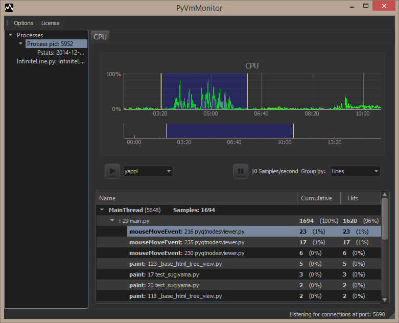

PyVmMonitor
PyVmMonitor is a profiler with a simple goal: being the best way to profile a Python program.
Current Features
- Attach profiler to a running (CPython) program
- On demand profiling with Yappi integration
- Analyze existing PStats results
- Open DOT files
- Programatic API access
- Live sampling/CPU view
- Select time range
- Group samples by method or line

View the Manual for more information
Release notes: 0.0.8
Integration
- It's now Integrated with PyDev (profile view).
- Files may be opened with an external editor (must be configured in options).
- A command line to use PyVmMonitor is now provided (so, it can be used from the API or from the command line).
Platforms supported
- PyVmMonitor is now distributed in:
- Windows (64/32 bits)
- Linux (64/32 bits)
- Mac OS (64 bits)
UI improvements
- Alt+Back goes to previous location.
- Geometry is persisted upon restarts of the application.
- If attached process finishes, it's shown in the UI.
- PStats view save how it was sorted (cumulative/internal) and scroll location.
- When we start profiling, the UI should show that properly (i.e.: update ui from backend).
- When selecting editor in new line, its title is changed.
- If we deselect/select editor, it no longer reloads the contents if nothing changed.
- Silencing exception at shutdown when sampling.
- Find working in internal editor.
- Show visual indication if internal editor is dirty/saved.
- It's possible to disconnect from a process.
- Fixed UnicodeDecodeError if target file has accents.
- Fixed issue where incompatible Qt library from host machin was being loaded.
- When opening pstat/dot file a .* option was added.
- Don't connect to pids we're already connected.
- The grouped statistics visual state is kept on deselect/select.
- The existing tabs may be closed (editor, pstats, dot, etc).
- Graph is drawn with arrows (instead of circle!).
- About was created.
- Provide a separate button for saving in pstats format (not only in hidden menu).
- On live tree view, expand to leaf (first child to the end).
- Provide a way to have only a single PyVMMonitor active (or at most one at each port it's listening to).